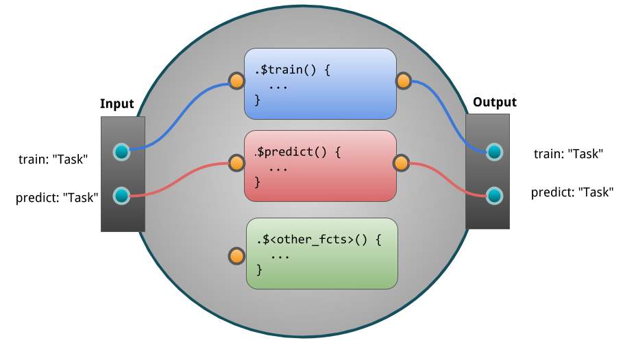
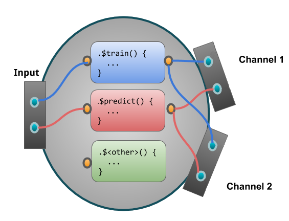
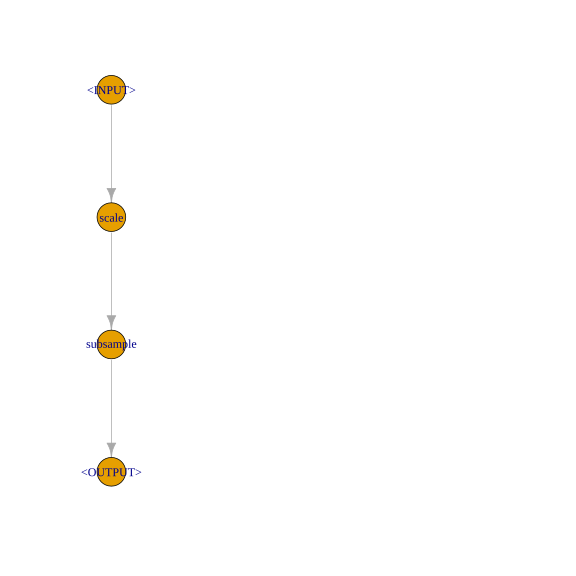
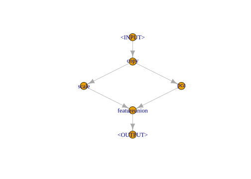

4.7 In-depth look into mlr3pipelines
This vignette is an in-depth introduction to mlr3pipelines, the dataflow programming toolkit for machine learning in R using mlr3.
It will go through basic concepts and then give a few examples that both show the simplicity as well as the power and versatility of using mlr3pipelines.
4.7.1 What’s the Point
Machine learning toolkits often try to abstract away the processes happening inside machine learning algorithms.
This makes it easy for the user to switch out one algorithm for another without having to worry about what is happening inside it, what kind of data it is able to operate on etc.
The benefit of using mlr3, for example, is that one can create a Learner, a Task, a Resampling etc. and use them for typical machine learning operations.
It is trivial to exchange individual components and therefore use, for example, a different Learner in the same experiment for comparison.
task = as_task_classif(iris, target = "Species")
lrn = lrn("classif.rpart")
rsmp = rsmp("holdout")
resample(task, lrn, rsmp)## <ResampleResult> of 1 iterations
## * Task: iris
## * Learner: classif.rpart
## * Warnings: 0 in 0 iterations
## * Errors: 0 in 0 iterationsHowever, this modularity breaks down as soon as the learning algorithm encompasses more than just model fitting, like data preprocessing, ensembles or other meta models.
mlr3pipelines takes modularity one step further than mlr3: it makes it possible to build individual steps within a Learner out of building blocks called PipeOps.
4.7.2 PipeOp: Pipeline Operators
The most basic unit of functionality within mlr3pipelines is the PipeOp, short for “pipeline operator,” which represents a trans-formative operation on input (for example a training dataset) leading to output.
It can therefore be seen as a generalized notion of a function, with a certain twist: PipeOps behave differently during a “training phase” and a “prediction phase.”
The training phase will typically generate a certain model of the data that is saved as internal state.
The prediction phase will then operate on the input data depending on the trained model.
An example of this behavior is the principal component analysis operation (“PipeOpPCA”):
During training, it will transform incoming data by rotating it in a way that leads to uncorrelated features ordered by their contribution to total variance.
It will also save the rotation matrix to be used during for new data.
This makes it possible to perform “prediction” with single rows of new data, where a row’s scores on each of the principal components (the components of the training data!) is computed.
po = po("pca")
po$train(list(task))[[1]]$data()## Species PC1 PC2 PC3 PC4
## 1: setosa -2.684 0.31940 -0.02791 -0.002262
## 2: setosa -2.714 -0.17700 -0.21046 -0.099027
## 3: setosa -2.889 -0.14495 0.01790 -0.019968
## 4: setosa -2.745 -0.31830 0.03156 0.075576
## 5: setosa -2.729 0.32675 0.09008 0.061259
## ---
## 146: virginica 1.944 0.18753 0.17783 -0.426196
## 147: virginica 1.527 -0.37532 -0.12190 -0.254367
## 148: virginica 1.764 0.07886 0.13048 -0.137001
## 149: virginica 1.901 0.11663 0.72325 -0.044595
## 150: virginica 1.390 -0.28266 0.36291 0.155039single_line_task = task$clone()$filter(1)
po$predict(list(single_line_task))[[1]]$data()## Species PC1 PC2 PC3 PC4
## 1: setosa -2.684 0.3194 -0.02791 -0.002262po$state## Standard deviations (1, .., p=4):
## [1] 2.0563 0.4926 0.2797 0.1544
##
## Rotation (n x k) = (4 x 4):
## PC1 PC2 PC3 PC4
## Petal.Length 0.85667 -0.17337 0.07624 0.4798
## Petal.Width 0.35829 -0.07548 0.54583 -0.7537
## Sepal.Length 0.36139 0.65659 -0.58203 -0.3155
## Sepal.Width -0.08452 0.73016 0.59791 0.3197This shows the most important primitives incorporated in a PipeOp:
* $train(), taking a list of input arguments, turning them into a list of outputs, meanwhile saving a state in $state
* $predict(), taking a list of input arguments, turning them into a list of outputs, making use of the saved $state
* $state, the “model” trained with $train() and utilized during $predict().
Schematically we can represent the PipeOp like so:

4.7.2.1 Why the $state
It is important to take a moment and notice the importance of a $state variable and the $train() / $predict() dichotomy in a PipeOp.
There are many preprocessing methods, for example scaling of parameters or imputation, that could in theory just be applied to training data and prediction / validation data separately, or they could be applied to a task before resampling is performed.
This would, however, be fallacious:
- The preprocessing of each instance of prediction data should not depend on the remaining prediction dataset. A prediction on a single instance of new data should give the same result as prediction performed on a whole dataset.
- If preprocessing is performed on a task before resampling is done, information about the test set can leak into the training set. Resampling should evaluate the generalization performance of the entire machine learning method, therefore the behavior of this entire method must only depend only on the content of the training split during resampling.
4.7.2.2 Where to Get PipeOps
Each PipeOp is an instance of an “R6” class, many of which are provided by the mlr3pipelines package itself.
They can be constructed explicitly (“PipeOpPCA$new()”) or retrieved from the mlr_pipeops dictionary: po("pca").
The entire list of available PipeOps, and some meta-information, can be retrieved using as.data.table():
as.data.table(mlr_pipeops)[, c("key", "input.num", "output.num")]## key input.num output.num
## 1: boxcox 1 1
## 2: branch 1 NA
## 3: chunk 1 NA
## 4: classbalancing 1 1
## 5: classifavg NA 1
## 6: classweights 1 1
## 7: colapply 1 1
## 8: collapsefactors 1 1
## 9: colroles 1 1
## 10: copy 1 NA
## 11: datefeatures 1 1
## 12: encode 1 1
## 13: encodeimpact 1 1
## 14: encodelmer 1 1
## 15: featureunion NA 1
## 16: filter 1 1
## 17: fixfactors 1 1
## 18: histbin 1 1
## 19: ica 1 1
## 20: imputeconstant 1 1
## 21: imputehist 1 1
## 22: imputelearner 1 1
## 23: imputemean 1 1
## 24: imputemedian 1 1
## 25: imputemode 1 1
## 26: imputeoor 1 1
## 27: imputesample 1 1
## 28: kernelpca 1 1
## 29: learner 1 1
## 30: learner_cv 1 1
## 31: missind 1 1
## 32: modelmatrix 1 1
## 33: multiplicityexply 1 NA
## 34: multiplicityimply NA 1
## 35: mutate 1 1
## 36: nmf 1 1
## 37: nop 1 1
## 38: ovrsplit 1 1
## 39: ovrunite 1 1
## 40: pca 1 1
## 41: proxy NA 1
## 42: quantilebin 1 1
## 43: randomprojection 1 1
## 44: randomresponse 1 1
## 45: regravg NA 1
## 46: removeconstants 1 1
## 47: renamecolumns 1 1
## 48: replicate 1 1
## 49: scale 1 1
## 50: scalemaxabs 1 1
## 51: scalerange 1 1
## 52: select 1 1
## 53: smote 1 1
## 54: spatialsign 1 1
## 55: subsample 1 1
## 56: targetinvert 2 1
## 57: targetmutate 1 2
## 58: targettrafoscalerange 1 2
## 59: textvectorizer 1 1
## 60: threshold 1 1
## 61: tunethreshold 1 1
## 62: unbranch NA 1
## 63: vtreat 1 1
## 64: yeojohnson 1 1
## key input.num output.numWhen retrieving PipeOps from the mlr_pipeops dictionary, it is also possible to give additional constructor arguments, such as an id or parameter values.
po("pca", rank. = 3)## PipeOp: <pca> (not trained)
## values: <rank.=3>
## Input channels <name [train type, predict type]>:
## input [Task,Task]
## Output channels <name [train type, predict type]>:
## output [Task,Task]4.7.3 PipeOp Channels
4.7.3.1 Input Channels
Just like functions, PipeOps can take multiple inputs.
These multiple inputs are always given as elements in the input list.
For example, there is a PipeOpFeatureUnion that combines multiple tasks with different features and “cbind()s” them together, creating one combined task.
When two halves of the iris task are given, for example, it recreates the original task:
iris_first_half = task$clone()$select(c("Petal.Length", "Petal.Width"))
iris_second_half = task$clone()$select(c("Sepal.Length", "Sepal.Width"))
pofu = po("featureunion", innum = 2)
pofu$train(list(iris_first_half, iris_second_half))[[1]]$data()## Species Petal.Length Petal.Width Sepal.Length Sepal.Width
## 1: setosa 1.4 0.2 5.1 3.5
## 2: setosa 1.4 0.2 4.9 3.0
## 3: setosa 1.3 0.2 4.7 3.2
## 4: setosa 1.5 0.2 4.6 3.1
## 5: setosa 1.4 0.2 5.0 3.6
## ---
## 146: virginica 5.2 2.3 6.7 3.0
## 147: virginica 5.0 1.9 6.3 2.5
## 148: virginica 5.2 2.0 6.5 3.0
## 149: virginica 5.4 2.3 6.2 3.4
## 150: virginica 5.1 1.8 5.9 3.0Because PipeOpFeatureUnion effectively takes two input arguments here, we can say it has two input channels.
An input channel also carries information about the type of input that is acceptable.
The input channels of the pofu object constructed above, for example, each accept a Task during training and prediction.
This information can be queried from the $input slot:
pofu$input## name train predict
## 1: input1 Task Task
## 2: input2 Task TaskOther PipeOps may have channels that take different types during different phases.
The backuplearner PipeOp, for example, takes a NULL and a Task during training, and a Prediction and a Task during prediction:
## TODO this is an important case to handle here, do not delete unless there is a better example.
## po("backuplearner")$input4.7.3.2 Output Channels
Unlike the typical notion of a function, PipeOps can also have multiple output channels.
$train() and $predict() always return a list, so certain PipeOps may return lists with more than one element.
Similar to input channels, the information about the number and type of outputs given by a PipeOp is available in the $output slot.
The chunk PipeOp, for example, chunks a given Task into subsets and consequently returns multiple Task objects, both during training and prediction.
The number of output channels must be given during construction through the outnum argument.
po("chunk", outnum = 3)$output## name train predict
## 1: output1 Task Task
## 2: output2 Task Task
## 3: output3 Task TaskNote that the number of output channels during training and prediction is the same.
A schema of a PipeOp with two output channels:

4.7.3.3 Channel Configuration
Most PipeOps have only one input channel (so they take a list with a single element), but there are a few with more than one;
In many cases, the number of input or output channels is determined during construction, e.g. through the innum / outnum arguments.
The input.num and output.num columns of the mlr_pipeops-table above show the default number of channels, and NA if the number depends on a construction argument.
The default printer of a PipeOp gives information about channel names and types:
## po("backuplearner")4.7.4 Graph: Networks of PipeOps
4.7.4.1 Basics
What is the advantage of this tedious way of declaring input and output channels and handling in/output through lists?
Because each PipeOp has a known number of input and output channels that always produce or accept data of a known type, it is possible to network them together in Graphs.
A Graph is a collection of PipeOps with “edges” that mandate that data should be flowing along them.
Edges always pass between PipeOp channels, so it is not only possible to explicitly prescribe which position of an input or output list an edge refers to, it makes it possible to make different components of a PipeOp’s output flow to multiple different other PipeOps, as well as to have a PipeOp gather its input from multiple other PipeOps.
A schema of a simple graph of PipeOps:

A Graph is empty when first created, and PipeOps can be added using the $add_pipeop() method.
The $add_edge() method is used to create connections between them.
While the printer of a Graph gives some information about its layout, the most intuitive way of visualizing it is using the $plot() function.
gr = Graph$new()
gr$add_pipeop(po("scale"))
gr$add_pipeop(po("subsample", frac = 0.1))
gr$add_edge("scale", "subsample")print(gr)## Graph with 2 PipeOps:
## ID State sccssors prdcssors
## scale <<UNTRAINED>> subsample
## subsample <<UNTRAINED>> scalegr$plot(html = FALSE)
A Graph itself has a $train() and a $predict() method that accept some data and propagate this data through the network of PipeOps.
The return value corresponds to the output of the PipeOp output channels that are not connected to other PipeOps.
gr$train(task)[[1]]$data()## Species Petal.Length Petal.Width Sepal.Length Sepal.Width
## 1: setosa -1.3358 -1.3110521 -0.89767 1.0156
## 2: setosa -1.1658 -1.1798595 -0.17309 1.7039
## 3: setosa -1.2225 -1.0486668 -1.01844 0.7862
## 4: setosa -1.3358 -1.3110521 -0.77691 0.7862
## 5: setosa -1.3924 -1.1798595 -1.62225 -1.7375
## 6: setosa -1.3358 -1.1798595 -1.25996 -0.1315
## 7: versicolor 0.1371 -0.2615107 0.18920 -1.9670
## 8: versicolor 0.5903 0.2632600 1.15530 -0.5904
## 9: versicolor 0.4203 0.3944526 -0.53538 -0.1315
## 10: versicolor 0.4203 0.5256453 0.18920 0.7862
## 11: versicolor 0.3637 0.1320673 0.55149 -1.7375
## 12: versicolor 0.3637 0.0008746 -0.41462 -1.0493
## 13: virginica 0.7602 1.5751867 -0.05233 -0.5904
## 14: virginica 1.2700 0.7880307 1.63836 0.3273
## 15: virginica 1.2134 1.4439941 1.15530 0.3273gr$predict(single_line_task)[[1]]$data()## Species Petal.Length Petal.Width Sepal.Length Sepal.Width
## 1: setosa -1.336 -1.311 -0.8977 1.016The collection of PipeOps inside a Graph can be accessed through the $pipeops slot.
The set of edges in the Graph can be inspected through the $edges slot.
It is possible to modify individual PipeOps and edges in a Graph through these slots, but this is not recommended because no error checking is performed and it may put the Graph in an unsupported state.
4.7.4.2 Networks
The example above showed a linear preprocessing pipeline, but it is in fact possible to build true “graphs” of operations, as long as no loops are introduced1.
PipeOps with multiple output channels can feed their data to multiple different subsequent PipeOps, and PipeOps with multiple input channels can take results from different PipeOps.
When a PipeOp has more than one input / output channel, then the Graph’s $add_edge() method needs an additional argument that indicates which channel to connect to.
This argument can be given in the form of an integer, or as the name of the channel.
The following constructs a Graph that copies the input and gives one copy each to a “scale” and a “pca” PipeOp.
The resulting columns of each operation are put next to each other by “featureunion.”
gr = Graph$new()$
add_pipeop(po("copy", outnum = 2))$
add_pipeop(po("scale"))$
add_pipeop(po("pca"))$
add_pipeop(po("featureunion", innum = 2))
gr$
add_edge("copy", "scale", src_channel = 1)$ # designating channel by index
add_edge("copy", "pca", src_channel = "output2")$ # designating channel by name
add_edge("scale", "featureunion", dst_channel = 1)$
add_edge("pca", "featureunion", dst_channel = 2)
gr$plot(html = FALSE)
gr$train(iris_first_half)[[1]]$data()## Species Petal.Length Petal.Width PC1 PC2
## 1: setosa -1.3358 -1.3111 -2.561 -0.006922
## 2: setosa -1.3358 -1.3111 -2.561 -0.006922
## 3: setosa -1.3924 -1.3111 -2.653 0.031850
## 4: setosa -1.2791 -1.3111 -2.469 -0.045694
## 5: setosa -1.3358 -1.3111 -2.561 -0.006922
## ---
## 146: virginica 0.8169 1.4440 1.756 0.455479
## 147: virginica 0.7036 0.9192 1.417 0.164312
## 148: virginica 0.8169 1.0504 1.640 0.178946
## 149: virginica 0.9302 1.4440 1.940 0.377936
## 150: virginica 0.7602 0.7880 1.470 0.0333624.7.4.3 Syntactic Sugar
Although it is possible to create intricate Graphs with edges going all over the place (as long as no loops are introduced), there is usually a clear direction of flow between “layers” in the Graph.
It is therefore convenient to build up a Graph from layers, which can be done using the %>>% (“double-arrow”) operator.
It takes either a PipeOp or a Graph on each of its sides and connects all of the outputs of its left-hand side to one of the inputs each of its right-hand side–the number of inputs therefore must match the number of outputs.
Together with the gunion() operation, which takes PipeOps or Graphs and arranges them next to each other akin to a (disjoint) graph union, the above network can more easily be constructed as follows:
gr = po("copy", outnum = 2) %>>%
gunion(list(po("scale"), po("pca"))) %>>%
po("featureunion", innum = 2)
gr$plot(html = FALSE)
4.7.4.4 PipeOp IDs and ID Name Clashes
PipeOps within a graph are addressed by their $id-slot.
It is therefore necessary for all PipeOps within a Graph to have a unique $id.
The $id can be set during or after construction, but it should not directly be changed after a PipeOp was inserted in a Graph.
At that point, the $set_names()-method can be used to change PipeOp ids.
po1 = po("scale")
po2 = po("scale")
po1 %>>% po2 ## name clash## Error in gunion(list(g1, g2)): Assertion on 'ids of pipe operators' failed: Must have unique names, but element 2 is duplicated.po2$id = "scale2"
gr = po1 %>>% po2
gr## Graph with 2 PipeOps:
## ID State sccssors prdcssors
## scale <<UNTRAINED>> scale2
## scale2 <<UNTRAINED>> scale## Alternative ways of getting new ids:
po("scale", id = "scale2")## PipeOp: <scale2> (not trained)
## values: <robust=FALSE>
## Input channels <name [train type, predict type]>:
## input [Task,Task]
## Output channels <name [train type, predict type]>:
## output [Task,Task]po("scale", id = "scale2")## PipeOp: <scale2> (not trained)
## values: <robust=FALSE>
## Input channels <name [train type, predict type]>:
## input [Task,Task]
## Output channels <name [train type, predict type]>:
## output [Task,Task]## sometimes names of PipeOps within a Graph need to be changed
gr2 = po("scale") %>>% po("pca")
gr %>>% gr2## Error in gunion(list(g1, g2)): Assertion on 'ids of pipe operators' failed: Must have unique names, but element 3 is duplicated.gr2$set_names("scale", "scale3")
gr %>>% gr2## Graph with 4 PipeOps:
## ID State sccssors prdcssors
## scale <<UNTRAINED>> scale2
## scale2 <<UNTRAINED>> scale3 scale
## scale3 <<UNTRAINED>> pca scale2
## pca <<UNTRAINED>> scale34.7.5 Learners in Graphs, Graphs in Learners
The true power of mlr3pipelines derives from the fact that it can be integrated seamlessly with mlr3.
Two components are mainly responsible for this:
PipeOpLearner, aPipeOpthat encapsulates amlr3Learnerand creates aPredictionDataobject in its$predict()phaseGraphLearner, amlr3Learnerthat can be used in place of any othermlr3Learner, but which does prediction using aGraphgiven to it
Note that these are dual to each other: One takes a Learner and produces a PipeOp (and by extension a Graph); the other takes a Graph and produces a Learner.
4.7.5.1 PipeOpLearner
The PipeOpLearner is constructed using a mlr3 Learner and will use it to create PredictionData in the $predict() phase.
The output during $train() is NULL.
It can be used after a preprocessing pipeline, and it is even possible to perform operations on the PredictionData, for example by averaging multiple predictions or by using the “PipeOpBackupLearner” operator to impute predictions that a given model failed to create.
The following is a very simple Graph that performs training and prediction on data after performing principal component analysis.
gr = po("pca") %>>% po("learner",
lrn("classif.rpart"))gr$train(task)## $classif.rpart.output
## NULLgr$predict(task)## $classif.rpart.output
## <PredictionClassif> for 150 observations:
## row_ids truth response
## 1 setosa setosa
## 2 setosa setosa
## 3 setosa setosa
## ---
## 148 virginica virginica
## 149 virginica virginica
## 150 virginica virginica4.7.5.2 GraphLearner
Although a Graph has $train() and $predict() functions, it can not be used directly in places where mlr3 Learners can be used like resampling or benchmarks.
For this, it needs to be wrapped in a GraphLearner object, which is a thin wrapper that enables this functionality.
The resulting Learner is extremely versatile, because every part of it can be modified, replaced, parameterized and optimized over.
Resampling the graph above can be done the same way that resampling of the Learner was performed in the introductory example.
lrngrph = as_learner(gr)
resample(task, lrngrph, rsmp)## <ResampleResult> of 1 iterations
## * Task: iris
## * Learner: pca.classif.rpart
## * Warnings: 0 in 0 iterations
## * Errors: 0 in 0 iterations4.7.6 Hyperparameters
mlr3pipelines relies on the paradox package to provide parameters that can modify each PipeOp’s behavior.
paradox parameters provide information about the parameters that can be changed, as well as their types and ranges.
They provide a unified interface for benchmarks and parameter optimization (“tuning”).
For a deep dive into paradox, see the tuning chapter or the in-depth paradox chapter.
The ParamSet, representing the space of possible parameter configurations of a PipeOp, can be inspected by accessing the $param_set slot of a PipeOp or a Graph.
op_pca = po("pca")
op_pca$param_set## <ParamSet:pca>
## id class lower upper nlevels default value
## 1: center ParamLgl NA NA 2 TRUE
## 2: scale. ParamLgl NA NA 2 FALSE
## 3: rank. ParamInt 1 Inf Inf
## 4: affect_columns ParamUty NA NA Inf <Selector[1]>To set or retrieve a parameter, the $param_set$values slot can be accessed.
Alternatively, the param_vals value can be given during construction.
op_pca$param_set$values$center = FALSE
op_pca$param_set$values## $center
## [1] FALSEop_pca = po("pca", center = TRUE)
op_pca$param_set$values## $center
## [1] TRUEEach PipeOp can bring its own individual parameters which are collected together in the Graph’s $param_set.
A PipeOp’s parameter names are prefixed with its $id to prevent parameter name clashes.
gr = op_pca %>>% po("scale")
gr$param_set## <ParamSetCollection>
## id class lower upper nlevels default value
## 1: pca.center ParamLgl NA NA 2 TRUE TRUE
## 2: pca.scale. ParamLgl NA NA 2 FALSE
## 3: pca.rank. ParamInt 1 Inf Inf
## 4: pca.affect_columns ParamUty NA NA Inf <Selector[1]>
## 5: scale.center ParamLgl NA NA 2 TRUE
## 6: scale.scale ParamLgl NA NA 2 TRUE
## 7: scale.robust ParamLgl NA NA 2 <NoDefault[3]> FALSE
## 8: scale.affect_columns ParamUty NA NA Inf <Selector[1]>gr$param_set$values## $pca.center
## [1] TRUE
##
## $scale.robust
## [1] FALSEBoth PipeOpLearner and GraphLearner preserve parameters of the objects they encapsulate.
op_rpart = po("learner", lrn("classif.rpart"))
op_rpart$param_set## <ParamSet:classif.rpart>
## id class lower upper nlevels default value
## 1: minsplit ParamInt 1 Inf Inf 20
## 2: minbucket ParamInt 1 Inf Inf <NoDefault[3]>
## 3: cp ParamDbl 0 1 Inf 0.01
## 4: maxcompete ParamInt 0 Inf Inf 4
## 5: maxsurrogate ParamInt 0 Inf Inf 5
## 6: maxdepth ParamInt 1 30 30 30
## 7: usesurrogate ParamInt 0 2 3 2
## 8: surrogatestyle ParamInt 0 1 2 0
## 9: xval ParamInt 0 Inf Inf 10 0
## 10: keep_model ParamLgl NA NA 2 FALSEglrn = as_learner(gr %>>% op_rpart)
glrn$param_set## <ParamSetCollection>
## id class lower upper nlevels default
## 1: pca.center ParamLgl NA NA 2 TRUE
## 2: pca.scale. ParamLgl NA NA 2 FALSE
## 3: pca.rank. ParamInt 1 Inf Inf
## 4: pca.affect_columns ParamUty NA NA Inf <Selector[1]>
## 5: scale.center ParamLgl NA NA 2 TRUE
## 6: scale.scale ParamLgl NA NA 2 TRUE
## 7: scale.robust ParamLgl NA NA 2 <NoDefault[3]>
## 8: scale.affect_columns ParamUty NA NA Inf <Selector[1]>
## 9: classif.rpart.minsplit ParamInt 1 Inf Inf 20
## 10: classif.rpart.minbucket ParamInt 1 Inf Inf <NoDefault[3]>
## 11: classif.rpart.cp ParamDbl 0 1 Inf 0.01
## 12: classif.rpart.maxcompete ParamInt 0 Inf Inf 4
## 13: classif.rpart.maxsurrogate ParamInt 0 Inf Inf 5
## 14: classif.rpart.maxdepth ParamInt 1 30 30 30
## 15: classif.rpart.usesurrogate ParamInt 0 2 3 2
## 16: classif.rpart.surrogatestyle ParamInt 0 1 2 0
## 17: classif.rpart.xval ParamInt 0 Inf Inf 10
## 18: classif.rpart.keep_model ParamLgl NA NA 2 FALSE
## value
## 1: TRUE
## 2:
## 3:
## 4:
## 5:
## 6:
## 7: FALSE
## 8:
## 9:
## 10:
## 11:
## 12:
## 13:
## 14:
## 15:
## 16:
## 17: 0
## 18:It is tempting to denote this as a “directed acyclic graph,” but this would not be entirely correct because edges run between channels of
PipeOps, notPipeOps themselves.↩︎